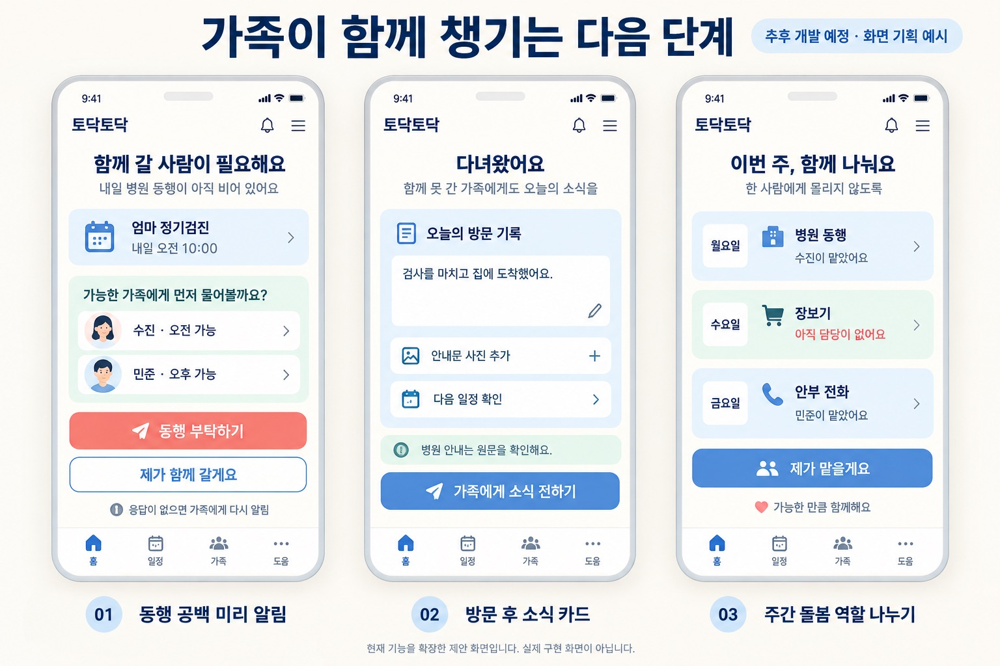

01 · 배경
안내를 공유해도 누가 갈지는 정해지지 않습니다
병원 안내를 가족 대화방에 올려도 누가 같이 갈지, 뭘 챙겨야 할지는 따로 연락해서 정해야 합니다. 대화가 쌓이면 금식이나 준비물 같은 중요한 내용이 묻히고, 챙기는 일은 결국 가족 중 한 명이 도맡게 됩니다.
02 · 문제 정의
확인하는 단계와 역할을 나누는 단계가 끊겨 있습니다
- 문자, 안내문 사진, 통화로 흩어진 내용을 사람이 하나하나 읽고 옮겨 적어야 합니다.
- 날짜, 시간, 장소, 준비물을 가족마다 따로 다시 확인합니다.
- 누가 같이 갈지, 누가 뭘 사 올지는 대화방 밖에서 전화로 또 정합니다.
기능을 넣을지 말지 고민될 때마다 "이게 한 사람에게 몰리는 일을 줄여 주나"를 기준으로 판단했습니다.
03 · 해결 방안
AI가 뽑은 일정은 가족이 확인해야 저장됩니다
사진·녹음·문자로 안내 입력
AI가 날짜·시간·장소·준비사항을 일정 후보로 추출, 원문 근거 표시
가족이 원문과 맞춰 보고 확정, 애매하면 '확인 필요'로 남기기
가족 타임라인에 공유하고 동행·준비물·부탁을 나눠 맡기
- "다음 주"처럼 기준일이 분명하지 않거나, 시간이 빠졌거나, 원문과 맞지 않으면 자동으로 확정하지 않고 '확인 필요'로 따로 보여 줍니다.
- 잘못된 일정이 한 번 저장되면 다시 확인할 일이 오히려 늘어나기 때문입니다.
- 진단, 처방, 금식, 복약 기준은 AI가 새로 만들어 내지 않도록 막았습니다.
04 · 운영 정책
건강 정보를 다루기 때문에 정한 운영 정책
- 사진과 녹음 원본은 저장하지 않고, 확정되지 않은 원문과 후보는 약 24시간 뒤에 지웁니다.
- 가족 단위로 접근 권한을 나누고, 당사자 동의를 확인한 다음에 가족을 연결합니다.
- 가상으로 만든 안내문으로 일정 추출, 원문 삭제, 권한 규칙을 점검하고, 오류가 나오면 코드와 프롬프트를 고친 뒤 같은 사례로 다시 확인합니다.
05 · 결과물
만든 것
- 내가 맡은 것: PRD와 사용자 흐름, 모바일 UI 시안, Next.js 초기 프로젝트와 카카오 로그인·가족 생성·초대 링크 기능, 사업계획서 초안, 시연 영상
- 팀 전체 결과물: Next.js·React·TypeScript, Cloudflare Workers·D1, Workers AI(Gemma 4·Whisper)로 사진·통화 일정 추출부터 가족 돌봄 흐름까지 구현
- 이후 모두의 AI 실험실 경진대회용으로 AI를 쓰는 이유, 서비스 흐름, 안전·검증 계획을 20장 기획서로 다시 정리

06 · 회고
애매한 날짜를 어떻게 다룰지가 가장 중요한 결정이었습니다
배운 점
- "다음 주 화요일"처럼 기준일이 없거나 시간이 빠진 안내를 AI가 그럴듯하게 채우면, 가족은 잘못된 날짜를 믿고 움직이게 됩니다.
- 그래서 이런 경우는 자동으로 확정하지 않고 '확인 필요'로 남겼습니다. 입력이 조금 번거로워져도, 저장된 일정은 다시 확인하지 않아도 되게 하는 쪽을 택했습니다.
아쉬운 점과 다음 단계
- 검증을 가상으로 만든 안내문으로 했기 때문에, 실제 병원 문자나 손글씨 안내문에서도 같은 결과가 나올지는 더 확인해야 합니다.
- 다음에는 실제 안내문 형식으로 추출 정확도를 확인하고, 동행 공백 알림과 주간 역할 나누기를 붙여 분담까지 서비스 안에서 끝나게 만들고 싶습니다.